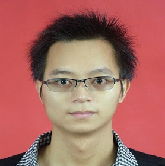

|  |
Kui Liu
PhD student SerVal, SnT University of Luxembourg Luxembourg Email: kui.liu@uni.lu I joined SerVal in SnT at University of Luxembourg (UL) as a PhD student on August 2016 under the supervision of Prof. Yves Le Traon, Dr. Tegawendé F. Bissyandé, and Dr. Dongsun Kim. I obtained my Bachelor and Master degrees in Computer Science at Southwest University (China) in 2010 and 2013. |
||||||||||
Research Interests |
|||||||||||
| Automated Program Repair, Fix Pattern Mining, Deep Code Learning, and Empirical Study. | |||||||||||
Publications (Google Scholar) |
|||||||||||
|
|||||||||||
Work Experience |
|||||||||||
|
|||||||||||
Services |
|||||||||||
|
External Reviewer: SANER-2017, ICST-2017, ICPC-2017, Codespy-2018, ASWEC-2018, ASE-2018, WWWJ-2018, QRS-2018, IST-2018, ISSTA-2018, ICSME-2018, ICSE-2018, SANER-2019.
|
|||||||||||
| Publicity Chairs: The International Workshop on Advances in Mobile App Analysis (A-Mobile 2018), co-located with ASE 2018. | |||||||||||
Awards |
|||||||||||
| Best ERA Paper Award at APSEC-2018. | |||||||||||